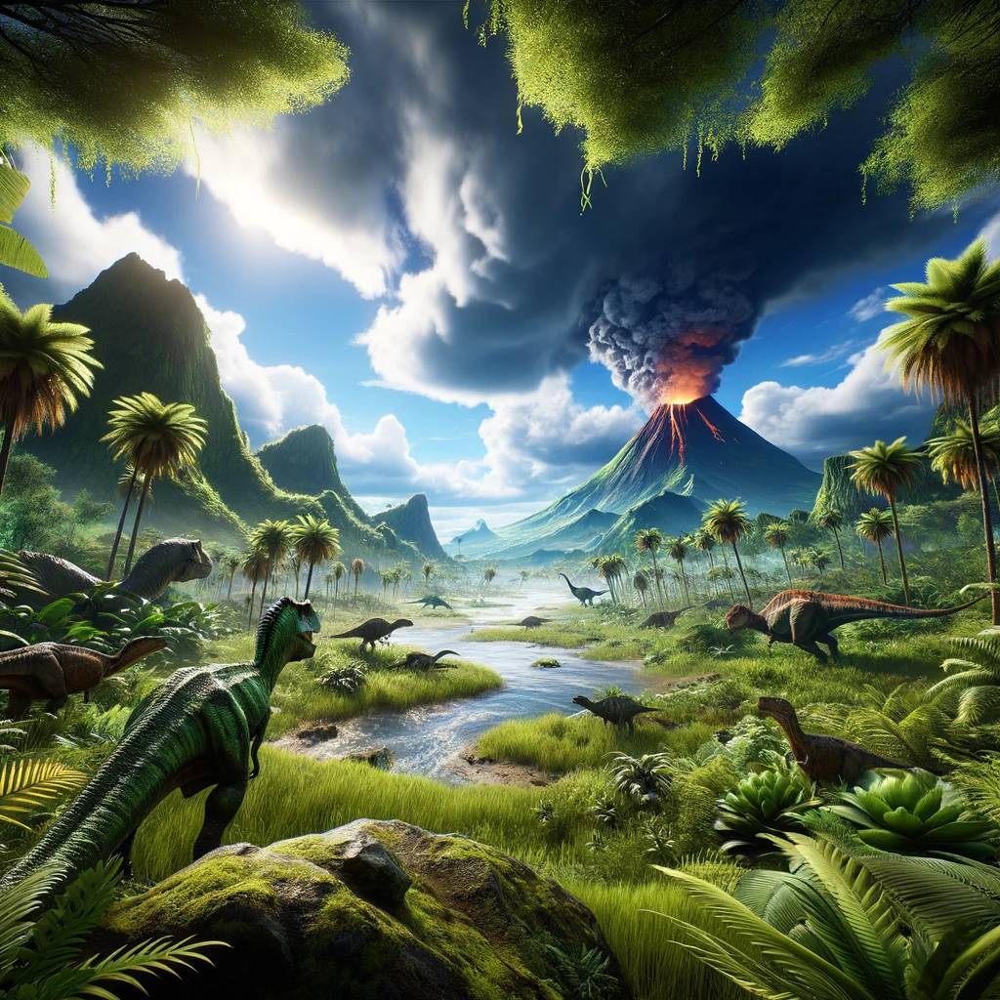
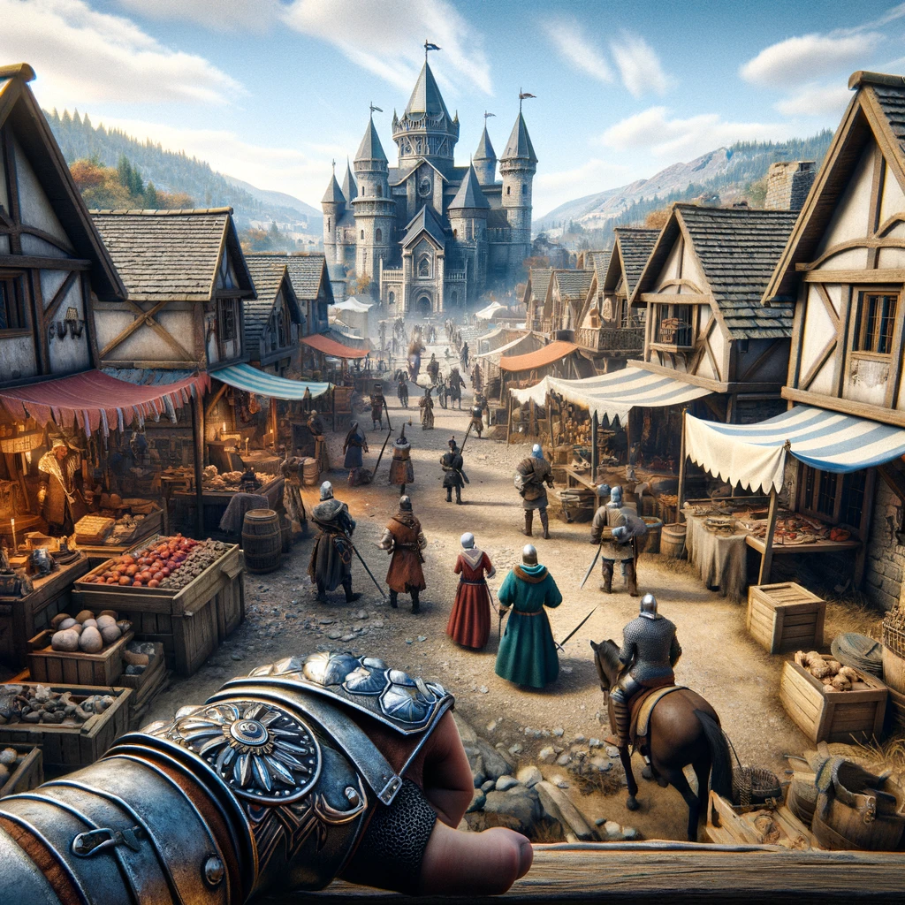
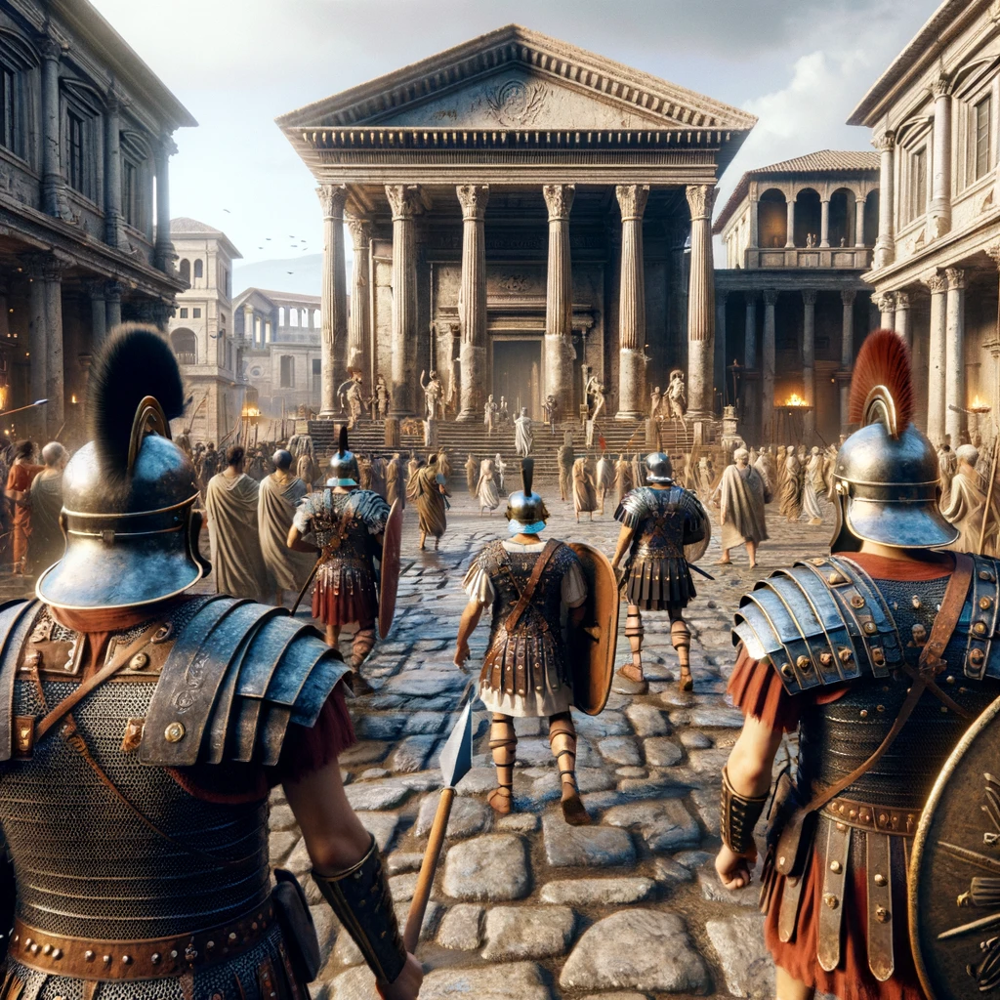

Introduction
Le but de cet outil est de permettre à des jeunes enfants de découvrir les mondes pré-historique, antiques et
médiévaux de chez eux.
Maquettes
Monde Préhistorique

Monde Médiéval

Monde Antique

Méthode d'Installation
Pour installer ce projet, veuillez suivre les étapes suivantes :
Téléchargez et installez UNITY à partir de ce lien.
Créez un compte Unity.
Téléchargez le projet depuis GitHub.
Ouvrez le projet dans Unity.
Lancez Steam et téléchargez Steam VR.
Connectez votre casque VR.
Appuyez sur le bouton PLAY dans Unity pour découvrir notre univers.
Personae
Le public cible de ce projet est constitué de jeunes enfants âgés de 8 à 14 ans, curieux de découvrir les
mondes préhistorique, médiéval et antique.
Crédits & Modèles utilisés
À venir